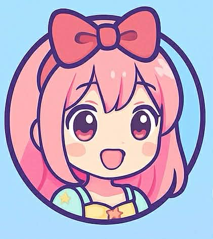

Hair accessories are items used to decorate or hold hair in place. They can make a hairstyle look more beautiful and stylish. Common hair accessories include hair clips, headbands, scrunchies, hair pins, and hair ties. People use them for both fashion and practical purposes, such as keeping hair out of the face. Hair accessories come in many colors, shapes, and materials, which makes them suitable for different occasions like school, parties,or weddings. They are popular among both children and adults and help express personal style. Today, hair accessories are sold in many markets and online stores. Fashion brands create new styles every year to follow trends. Some accessories are simple and affordable, while others are luxury items made with high-quality materials.